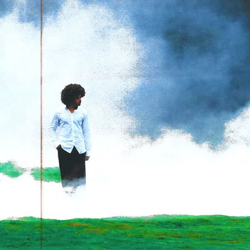

selected writings
currently blog-building!
come back soon for ramblings
Sketches of a Re-Imagined Mass. and Cass
Harvard Undergraduate Urban Sustainability Lab
, 2025

'Clarity' Single Review: Notes on Introspection and Living From 24kGoldn
Harvard Crimson Arts Magazine
, 2024
Maria's Story: In a household where doctors visits are unaffordable luxuries, AI steps up
MDandMe
, 2024
Climate Change and Effective Altruism: A Cause Worth Fighting For
Bow Seat Ocean Awareness Programs
, 2023
From Addiction to … Aviation? Tobacco, an Unexpected Fuel for the Future
New York Times
, 2022